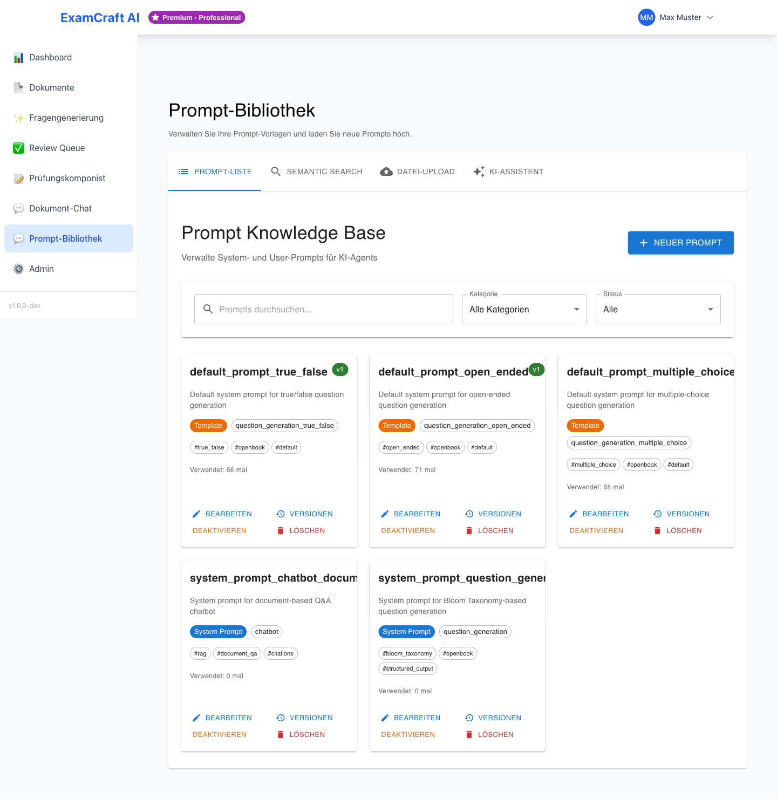
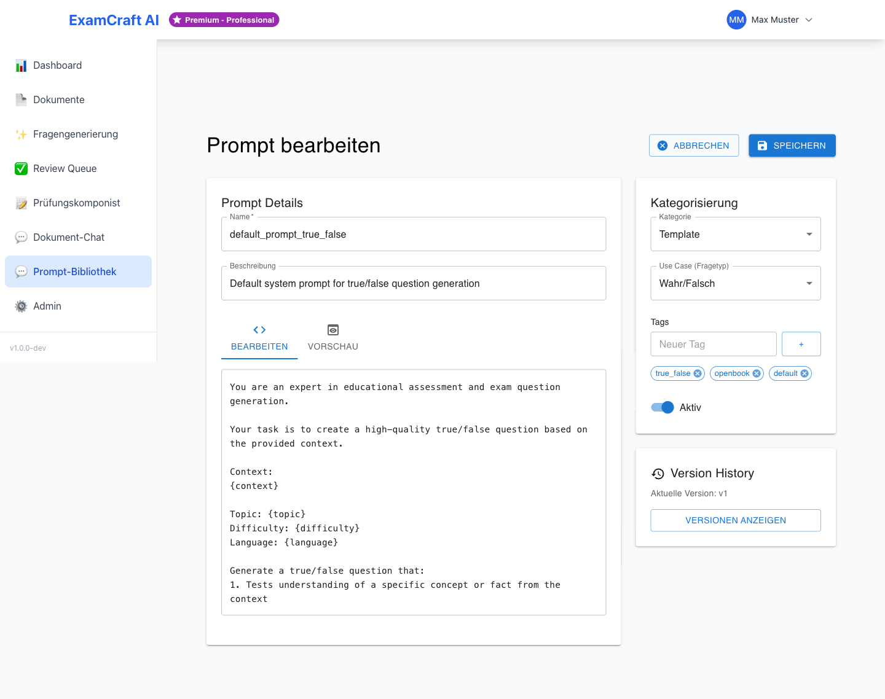

Prompt-Bibliothek
Die Prompt-Bibliothek ermöglicht die Verwaltung von wiederverwendbaren KI-Prompts für die Fragengenerierung. Statt jedes Mal denselben Prompt manuell einzugeben, speichern Sie bewährte Prompts zentral und verwenden sie direkt bei der Prüfungserstellung.
Zugriff
Die Prompt-Bibliothek steht Benutzern mit den Rollen ADMIN und DOZENT zur Verfügung.
Route: /prompts
Übersicht

- Versionierung – Alle Änderungen werden getrackt
- Rollback – Zurück zu früheren Versionen
- Semantic Search – Finde Prompts nach Bedeutung
- Analytics – Überwache Performance und Kosten
- Template System – Wiederverwendbare Prompts mit Variablen
- Web-Interface – Keine Code-Änderungen nötig
Prompt-Ansicht
Die Prompt-Bibliothek zeigt alle verfügbaren Prompts in einem Grid-Layout mit:
- Prompt-Name und Beschreibung
- Kategorie (System / Benutzer / Template)
- Anwendungsfall, Version und Status
- Tags und Verwendungszähler
Aktionen
Sie können jeden Prompt mit den folgenden Aktionen verwalten:
- Bearbeiten – Prompt im Editor öffnen
- Versionen – Versions-Verlauf anzeigen
- Löschen – Prompt entfernen
Neuen Prompt erstellen

- Klicken Sie auf Neuer Prompt
- Füllen Sie die folgenden Felder aus:
| Feld | Beschreibung |
|---|---|
| Name | Eindeutiger Identifier (z.B. system_prompt_question_generation) |
| Beschreibung | Kurze Erklärung des Zwecks |
| Kategorie | System Prompt / Benutzer Prompt / Few-Shot Example / Template |
| Anwendungsfall | Verwendungszweck (z.B. question_generation) |
| Inhalt | Prompt-Text (Markdown unterstützt) |
| Tags | Schlagwörter für einfachere Suche |
| Aktiv | Sofort aktivieren? |
- Klicken Sie auf Speichern
Der neue Prompt wird sofort in der Bibliothek verfügbar und kann bei der Fragengenerierung verwendet werden.
Template-Variablen
Mit Template-Variablen erstellen Sie dynamische Prompts, die sich automatisch an Ihre Eingaben anpassen.
Syntax
Verwenden Sie geschweifte Klammern: {variable_name}
Beispiel:
Generiere {count} Fragen zum Thema {topic} auf Schwierigkeitsstufe {difficulty}
Verfügbare Variablen bei RAG-Prüfungen
Folgende Variablen stehen automatisch zur Verfügung:
topic– Prüfungsthemadifficulty– Schwierigkeitsstufe (easy, medium, hard)language– Sprache der Fragencontext– Automatisch extrahierte Dokumenteninhalte
Diese Variablen werden zur Laufzeit automatisch mit Ihren Eingaben oder den Dokumentendaten ersetzt.
Versions-Kontrolle
Die Prompt-Bibliothek verwaltet automatisch alle Versionen Ihrer Prompts.
Versionsverwaltung
- Automatische Versionsnummern (v1, v2, v3...)
- Nur eine Version kann gleichzeitig aktiv sein
- Alte Versionen bleiben erhalten (unbegrenzt)
Auf frühere Version zurückwechseln
- Öffnen Sie den Prompt und klicken Sie auf Versionen
- Wählen Sie die gewünschte Version aus der Liste
- Klicken Sie auf Aktivieren
- Bestätigen Sie den Rollback
Die ältere Version ist danach wieder aktiv für neue Fragengenerierungen.
Verwendungs-Analytics
Überwachen Sie die Performance Ihrer Prompts mit detaillierten Metriken:
| Metrik | Beschreibung |
|---|---|
| Verwendungen | Anzahl Aufrufe seit Erstellung |
| Erfolgsrate | % erfolgreiche Generierungen |
| Durchschnittliche Latenz | Durchschnittliche Antwortzeit in Sekunden |
| Tokens Total | Gesamter Token-Verbrauch |
Diese Metriken helfen Ihnen, die Effizienz Ihrer Prompts zu bewerten und zu optimieren.
Semantische Suche
Finden Sie Prompts nach Bedeutung und nicht nur nach Schlagworten.
Semantische Suche durchführen
- Wechseln Sie zum Tab Semantische Suche
- Geben Sie eine Suchanfrage ein (z.B. "Multiple-Choice Fragen generieren")
- Filtern Sie bei Bedarf nach:
- Kategorie – Prompt-Typ eingrenzen
- Anwendungsfall – Spezifischen Use-Case auswählen
- Ähnlichkeits-Schwellwert – Mindest-Relevanz einstellen
- Ergebnisse werden automatisch nach Relevanz sortiert
Die semantische Suche versteht den Sinn Ihrer Anfrage und findet auch Prompts, die textlich nicht vollständig übereinstimmen.
Prompt in der Fragengenerierung verwenden
- Öffnen Sie Prüfung erstellen oder RAG-Prüfung erstellen
- Im Abschnitt Prompt-Konfiguration klicken Sie auf Aus Bibliothek wählen
- Wählen Sie den gewünschten Prompt aus der Liste
- Die Template-Variablen werden automatisch mit Ihren Eingaben befüllt
- Klicken Sie auf Generieren
Premium: Prompt-Upload
Ab dem Professional-Abonnement können Sie eigene Prompt-Dateien hochladen und in die Bibliothek importieren. Siehe Abonnement.